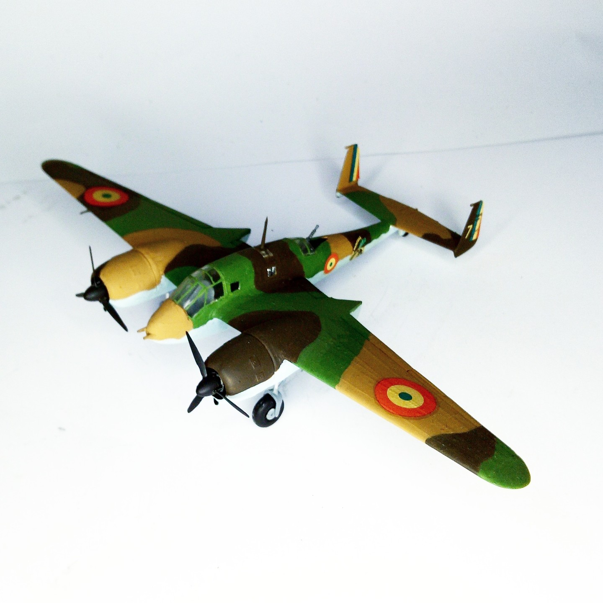

Aerei · scale model archive
Breguet Br.693
Breguet Br.693 — Kit: SMER, Scale: 1/72. GBA II/54-3 N1013 - 7 La Bul Fateuse (Sgt/C. Perrot de Thanneberg) Mai 1940 World War 2»Battle of France - Roye…

Photo gallery
English description
GBA II/54-3 N1013 - 7 La Bul Fateuse (Sgt/C. Perrot de Thanneberg) Mai 1940 World War 2»Battle of France - Roye
Nice aircraft lines
#1/72 #SMER
Descrizione italiana
GBA II/54-3 N1013 - 7 La Bul Fateuse (Sgt/C. Perrot de Thanneberg) Mai 1940 Seconda guerra mondiale»Battaglia di Francia - Roye.
Bell’aereo linee.